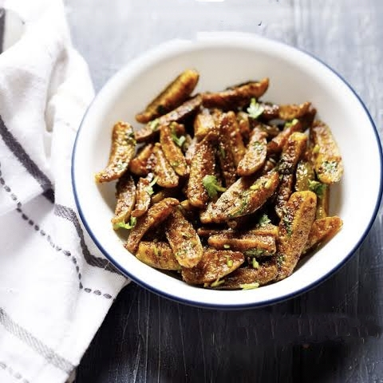

Telugu Ruchulu
తెలుగు రుచులు
Ivygourd /
దొండకాయ
Home Page
Click to change the language
తెలుగు కోసం క్లిక్ చేయండి
Ingredients:
250g dondakaya (ivy gourd), sliced thinly
2 tbsp oil
½ tsp mustard seeds (optional)
½ tsp turmeric powder
1 tsp red chili powder
½ tsp cumin powder
Salt to taste
2 tbsp grated coconut (optional, for extra flavor)
Curry leaves or coriander leaves (for garnish, optional)

Instructions:
Heat oil in a pan on medium heat. Add mustard seeds (if using) and let them splutter.
2. Add sliced dondakaya and sauté for 3-4 minutes, stirring occasionally.
Add turmeric, chili powder, cumin powder, and salt. Mix well so the spices coat the dondakaya evenly.
Cook on low-medium heat for 12-15 minutes, stirring occasionally, until it turns crispy and golden.
Garnish with grated coconut or coriander leaves and serve hot!
Tip
కావలసినవిః
250గ్రా దొండకాయ సన్నగా కోయాలి
2 టేబుల్ స్పూన్లు నూనె
½ స్పూన్ ఆవాలు
½ స్పూన్ పసుపు పొడి
1 స్పూన్ ఎర్ర మిరప పొడి
½ స్పూన్ జీలకర్ర పొడి
రుచికి ఉప్పు
2 టేబుల్ స్పూన్లు తురిమిన కొబ్బరి
కరివేపాకు లేదా కొత్తిమీర ఆకులు
మీడియం వేడి మీద పాన్ లో నూనె వేడి చేయండి. ఆవాలు వేసి (ఉపయోగిస్తే) మరియు వాటిని చిందరవందరగా ఉంచండి
దొండకాయ ముక్కలు వేసి 3-4 నిమిషాలు వేగించండి, అప్పుడప్పుడు కదిలించు.
పసుపు, కారం, జీలకర్ర, ఉప్పు వేసి కలపాలి. బాగా కలపండి, తద్వారా సుగంధ ద్రవ్యాలు దొండకాయను సమానంగా కోట్ చేయండి.
12-15 నిమిషాలు తక్కువ-మీడియం వేడి మీద ఉడికించాలి, అప్పుడప్పుడు కదిలించు, అది మంచిగా పెళుసైన మరియు బంగారు రంగులోకి మారుతుంది
తురిమిన కొబ్బరి లేదా కొత్తిమీర ఆకులతో గార్నిష్ చేసి వేడిగా సర్వ్ చేయండి!
చిట్కా